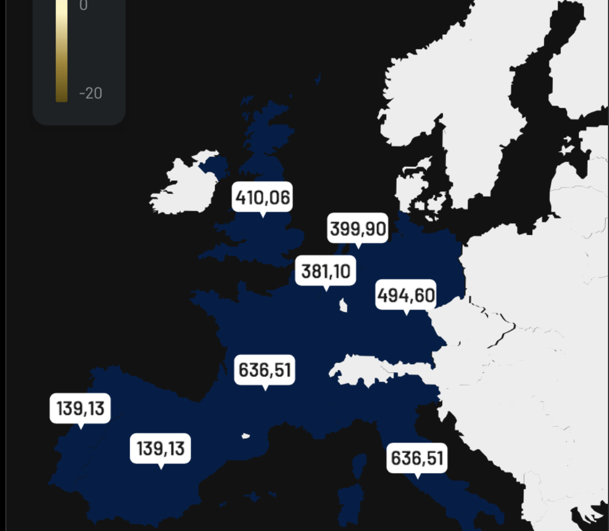
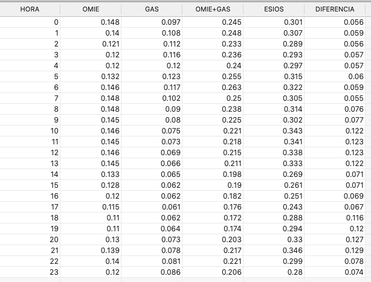

Puedes apoyar económicamente este proyecto en:
Subastas: precio de la luz mañana
22 de julio de 2022
Seguro que en algún momento os habéis cruzado con un mapa de Europa que muestra unos precios bastante bajos en comparación con el resto.
Esto es gracias a la excepción ibérica pero la información esta incompleta. Lo primero es que estos datos son para el mercado mayorista, y a esos datos hay que sumarle un cambio que introdujo la excepción ibérica, la compensación del gas. Esta compensación se suma al precio de la subasta de OMIE, la subasta del mercado mayorista. Desde la aprobación los precios de esta subasta comparado con los de ESIOS son muy diferentes, muchas veces se multiplicaban por tres. Mucha gente me ha escrito por email para obtener una explicación. La clave en la diferencia del precio esta en la compensación del gas, que es algo que hay que sumar al precio de OMIE. La compensación del gas se publica a las 14:00, así que desde hace un par de semanas he automatizado la obtención de la compensación y la estoy sumando al precio de la subasta del OMIE, así la diferencia con ESIOS es bastante menor. Y la diferencia entre OMIE+GAS y ESIOS es que en esta última se añaden otra serie de costes producidos por los servicios de ajuste, se incluyen los pagos por peajes de acceso y conexión que se añaden a la tarifa de energía y consumo. No incluyo aquí ni el IVA y demás añadidos que incluya vuestra operadora/comercializadora de turno.
La cosa queda así:
- 13:30 publico los datos de la subasta de OMIE.
- 14:00 obtengo los datos de la compensación y se lo sumo a los de OMIE.
- 20:30 publico los datos de ESIOS, el precio de la luz mañana en la web y vía newsletter.
- *Hay veces que la publicación de las precios se retrasa, son pocas pero pasa.
He hecho una tabla con los datos extraídos del 22 de julio para que se vean las diferencias.
